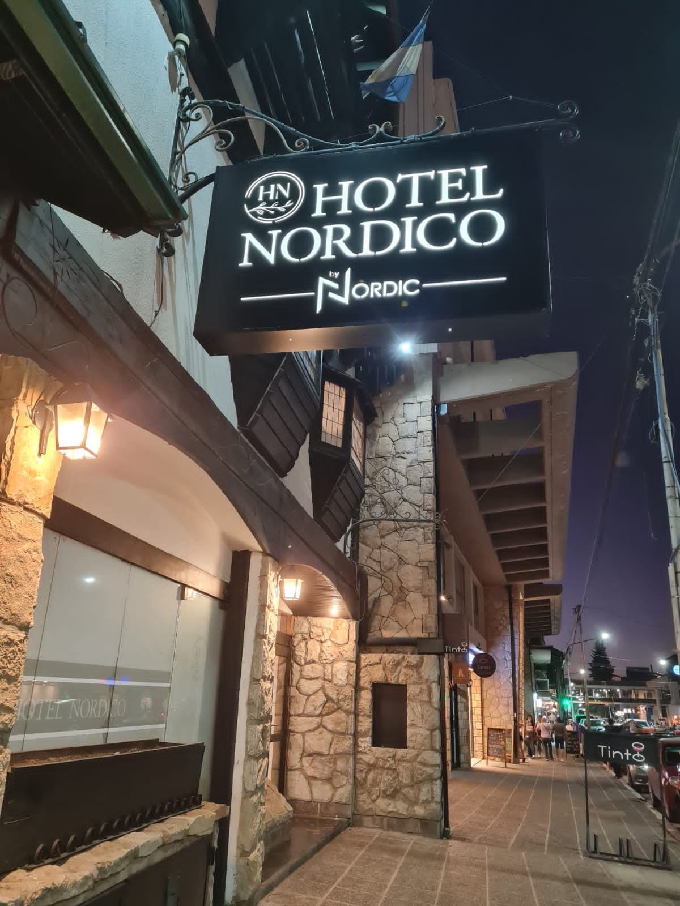
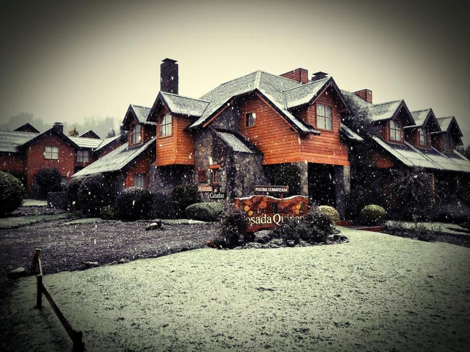

Hostería El Condado es ideal para el descanso y relajar la vista. Ubicada frente al Lago Gutierrez.

Hotel Nordico
Hotel Nórdico se encuentra ubicado en el centro de la ciudad de San Carlos de Bariloche, a dos cuadras del Centro Cívico.

Posada Quinen
Hosteria y Cabañas Posada Quinen destaca como una de las cabañas donde relajarse en la maravillosa y apasionante San Martín de los Andes, Argentina.
Hosteria Nordico Lake
Hostería Nórdico Lake se encuentra ubicado a un kilómetro del centro de la ciudad de San Carlos de Bariloche. Su ubicación estratégica, sobre la avenida Bustillo.
Hosteria Quime Quipan
Este hotel de estilo alpino está situado a 1 km del casino y el lago de Bariloche y ofrece habitaciones con vistas e interiores preciosos con madera y piedra.